WEEK 4: THI BUI'S THE BEST WE COULD DO (2017)

The cover of Bui's memoir. Image Source
Estimated Completion Time: 120 minutes
Semester-at-a-Glance:
| Module | Week | Date | Topics | Reading | Assignments & Assessments | Assignment Due Dates |
| Module 2 |
Week 4 | January 27 - February 2 | Thi Bui's The Best We Could Do (2017) | Chs. 1-3 (pp. 1-90) | Personal Reading Response 1 (10%) | February 2 at 11:59 pm (EST) |
| Week 5 | February 3-9 | Thi Bui's The Best We Could Do (2017) | Chs. 4-6 (pp. 91-210) | --- | --- | |
| Module 3 |
Week 6 | February 10-16 | Miné Okubo's Citizen 13660 (2014) | Pages 3-99 | Quiz 1 (10%) | February 16 at 11:59 pm (EST) |
| Week 7 | February 17-23 | Miné Okubo's Citizen 13660 (2014) | Pages 100-209 | --- | --- | |
READING WEEK |
February 24 - March 2 | |||||
| Module 4 | Week 8 | March 3-9 | George Takei's They Called Us Enemy (2019) | Pages 1-108 | Personal Reading Response 2 (20%) | March 9 at 11:59 pm (EST) |
| Week 9 | March 10-16 | George Takei's They Called Us Enemy (2019) | Pages 109-205 | --- | --- | |
| Module 5 |
Week 10 | March 17-23 |
Guy Delisle's Hostage (2017) |
Pages 1-97 | Group Discussion (20%) | March 23 at 11:59 pm (EST) |
| Week 11 | March 24-30 |
Guy Delisle's Hostage (2017) |
Pages 99-193 | --- | --- | |
| Module 6 |
Week 12 | March 31 - April 6 | Marjane Satrapi's Persepolis (2004) |
Pages 3-71 | Personal Memoir and Analysis (30%)--IF YOU WANT FEEDBACK ON THE PROJECT | April 6 at 11:59 pm (EST) |
| Week 13 | April 7-13 | Marjane Satrapi's Persepolis (2004) |
Personal Memoir and Analysis (30%) | April 13 at 11:59 pm (EST) | ||
| Week 14 | April 14-20 | Course Administrative Matters | --- | Quiz 2 (10%) |
April 20 at 11:59 pm (EST) Please note that because grades must be submitted, I cannot offer extensions on this quiz. Any that are not completed by the deadline will receive a grade of 0. |
|
Introduction
Welcome back to Week 4! This week, we're beginning The Best We Could Do, which I will be very honest about: it's a tough read at times. There are many trigger warnings for this text, and that information (with specific page numbers) can be found in the description below the text over in the "Course Texts" content section.
We will be spending some time today exploring the intersections amongst trauma, narrative, and language. The concept of time, in particular, really complicates how we approach this narrative.
One of the things that makes this graphic memoir interesting is how Bui deals with issues related to history, time, and chronology. This memoir does not go in a chronological, linear way.
Chapter 1 (Labor) discusses the creation of Bui's own family upon the birth of her son in 2005.
Chapter 2 (Rewind, Reverse) does exactly that: it starts in 2015 (recall that the book was published in 2017), but then it explores the history and structure of Bui's family of origin, moving backwards from 1999. However, even this section is not structured chronologically--it jumps around through different time periods of Bui's youth, including periods of time from before she was born.
Chapter 3 (Home, The Holding Pen) takes us through Bui's young childhood memories. Bui is about 5 years old in this chapter--not yet old enough to attend school.
Because the timeline in this memoir jumps around so much, I'm going to move through this week's analysis thematically so that there is some narrative cohesion for you folks.
Author Background
Let's begin with a talk by Thi Bui (00:14:55), which provides a wonderful context to help us understand the influences and lived experiences that shaped this graphic memoir:
4.png) |
Video ReflectionDuring her talk, how does Bui invite readers and audiences to experience her world through her graphic memoir? How does this experience affect you as a viewer and as a reader? |
Paratextual Materials in Life Writing
Paratext: in literary interpretation, paratext is material that surrounds a published main text (e.g., the story, non-fiction description, poems, etc.) supplied by the authors, editors, printers, and publishers. These added elements form a frame for the main text, and can change the reception of a text or its interpretation by the public. Paratext is most often associated with books, as they typically include a cover (with associated cover art), title, front matter (dedication, opening information, foreword, epigraph), back matter (endpapers, colophon) footnotes, and many other materials not crafted by the author. Other editorial decisions can also fall into the category of paratext, such as the formatting or typography.
Awesome job, there, Wikipedia! In summary, content is paratextual if it exists outside of the narrative-proper. One such element is the preface. Consider Bui's preface to The Best We Could Do:
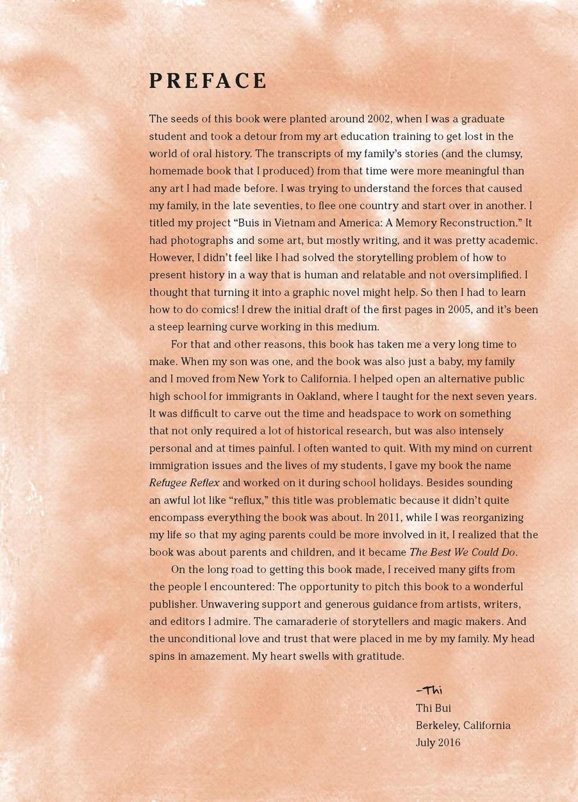
The first paragraph reads as follows: "Preface. The seeds of this book were planted around 2002, when I was a graduate student and took a detour from my art education training to get lost in the world of oral history. The transcripts of my family's stories (and the clumsy, homemade book that I produced) from that time were more meaningful than any art I had made before. I was trying to understand the forces that caused my family, in the late seventies, to flee one country and start over in another. I titled my project 'Buis in Vietnam and America: A Memory Reconstruction.' It had photographs and some art, but mostly writing, and it was pretty academic. However, I didn't feel like I had solved the storytelling problem of how to present history in a way that is human and relatable and not oversimplified. I thought that turning it into a graphic novel might help. So then I had to learn how to do comics! I drew the initial draft of the first pages in 2005, and it's been a steep learning curve working with this medium."
Interestingly, Bui knew the story that she wanted to tell and how she wanted to tell it, but she needed to develop the skills to be able to do so: she had to learn how to draw comics. What I love about this situation is that the approach is the inverse to what many graphic memoirists experience: often, they learned to draw at a young age and the graphic memoir became a natural extension and medium in which to tell their stories. Already, we can appreciate the tenacity and resiliency of the author, and we haven't even gotten to the first page of the narrative.
Prefaces vs. Forewords?A preface is an introduction to a text that is written by that text's author. A foreword is an introduction to a text that is written by someone other than the text's author. And now it's confession time: it wasn't until I was embarrassingly far into my academic career that I began to see the value of reading prefaces and introductions. Perhaps it's because of my ADHD, but I used to jump ahead right into the content. What I didn't understand at the time was that the preface or foreword often give us invaluable insights into the author, the text, and their world. |
Family History & Structure
Throughout Chapters 1-3, we learn about Thi's family history and are introduced to the main people in her life: her family of origin and her family of (pro)creation. First is her family of origin, including her sisters and brother (in birth order):
-
- Bổ = Father (pronunciation)
- Má = Mother (pronunciation)
- Quyên (pronunciation) -- Deceased
- Lan (pronunciation)
- Bích (pronunciation)
- Please note that, as Bui is careful to note in the text, "Bích" is not pronounced "bitch"
- Thảo (pronunciation) -- Deceased
- Thi
- Tâm (pronunciation)
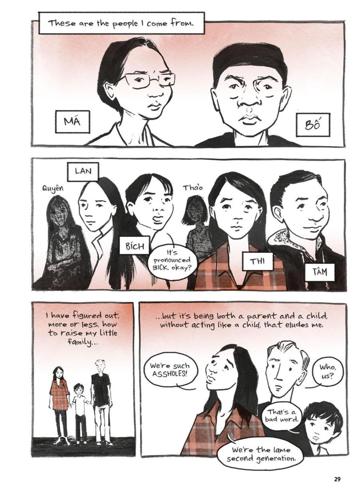
Page 29: the first two panels depict Bui's family of origin; the second two panels show her family of (pro)creation.
Bui's family of (pro)creation consists of herself, Travis (her husband--pronunciation), and their son (who is unnamed).
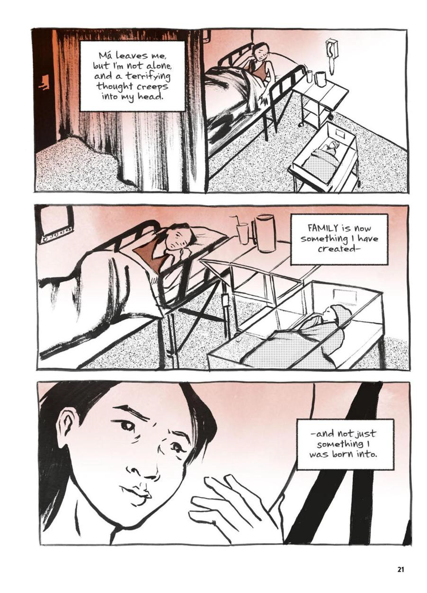
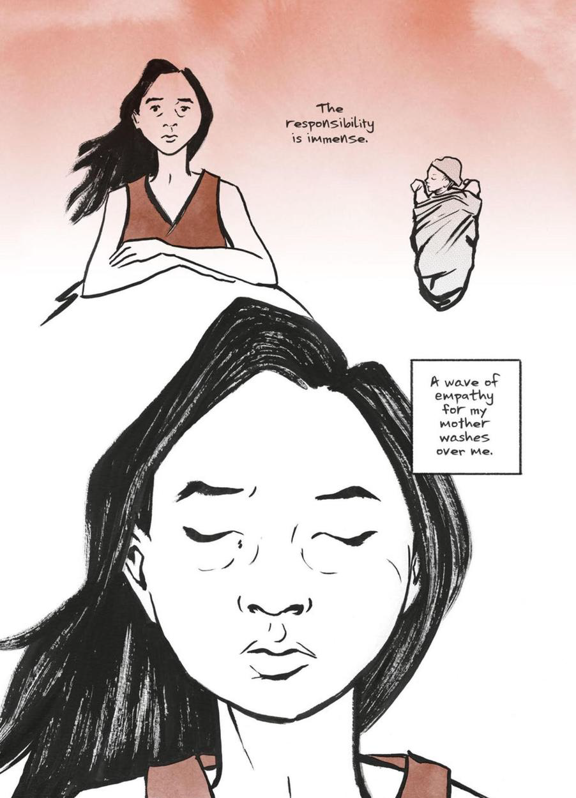
Pages 21-22: After her son is born and she is alone with him, Thi experiences a profound sense of empathy for her own mother as she realizes that she has now created a family of her own.
We also see Thi begin to empathize with her mother's struggles more now that she is a mother herself. Like most milestones things in life, parenthood is something for which one can never be prepared fully, and I think this feeling of being overwhelmed by such a significant period of change is one with which many can identify.
 |
My StoryOkay, story time! Having gone through having the traumatic birth of a child myself, reading Chapter 1 was discomfiting in many ways. Bui's son is two years older than my own daughter, and her experiences in the hospital resonate strongly, especially this page: 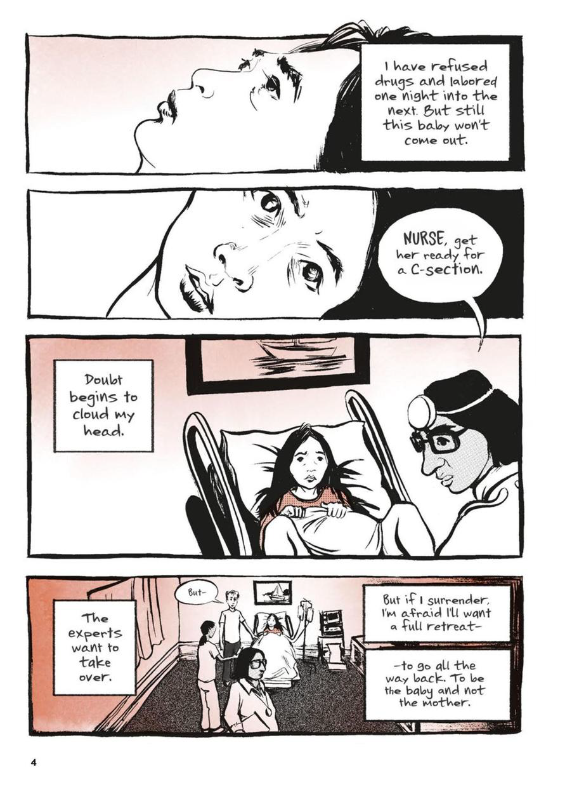 Page 4: Thi is taken into surgery for a c-section and is afraid that if she loses control over the situation, she will go back to wanting to be the baby and not the mother.
My daughter was born via c-section due to complications as well. As I was headed into surgery, despite having my husband with me, I still desperately wanted my own mom there to make sure that everything was going to be okay. This fear of profound changes and the experience of wanting to go back to being "the baby and not the mother," was a moment for which I was unprepared. When you're pregnant, people tell you all sorts of awful stories, but no one thinks to mention how the birth of a child completely remakes your identity. Here's a picture of my daughter and I two days after she was born. My parents had just arrived at the hospital (my parents were in South Africa when she was born!) and my mom took this picture. Later, my mother told me that when she saw me, she was struck by just how young I looked laying there with this tiny baby. "My baby has a baby," she said. Also: new parent fatigue is very, very real. 😅 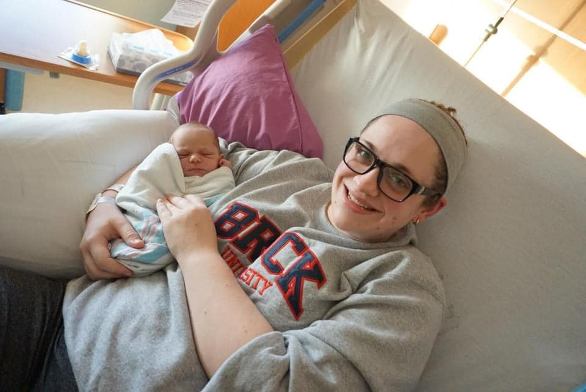 |
5.png) |
Self-ReflectionConsider a time in your life when you were going through a period of great change or struggle. It might be gender transition, the birth of a child, studying abroad, getting married, the death of a loved one, etc. Did you experience a shift in your sense of self-identity? What sort of emotions did you encounter during that process? Did anything about the experience take you by surprise? |
Plot and the Experience of Time
Time in a funny concept in life writing. It's often fluid, distorted, condensed, sped-up, and a memoir's plot often does not follow chronology.
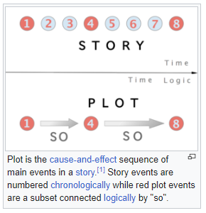
An image that depicts the difference between story and plot. Story is a series of events in chronological order. Plot isolates the relevant events and arranges them within a text. Image Source
Bui opts to share many birth narratives over the course of Chapters 1 and 2: some were stories of triumph and some were stories of loss. However, it is through these stories--these personal pasts--that we come to understand Thi's anxiety about parenthood. There is a tension throughout this text amongst past, present, and future: Thi did not have a stable upbringing, which has led her to have doubts about her own ability to be a parent. The lived traumas of Thi's past and the legacy of transgenerational trauma in her family has caused her to have an unstable and insecure relationship with family structures. Just as she turns to her mother during the birth of her son, we see her turning to the past for answers and a means to process the trauma in order to move forward:
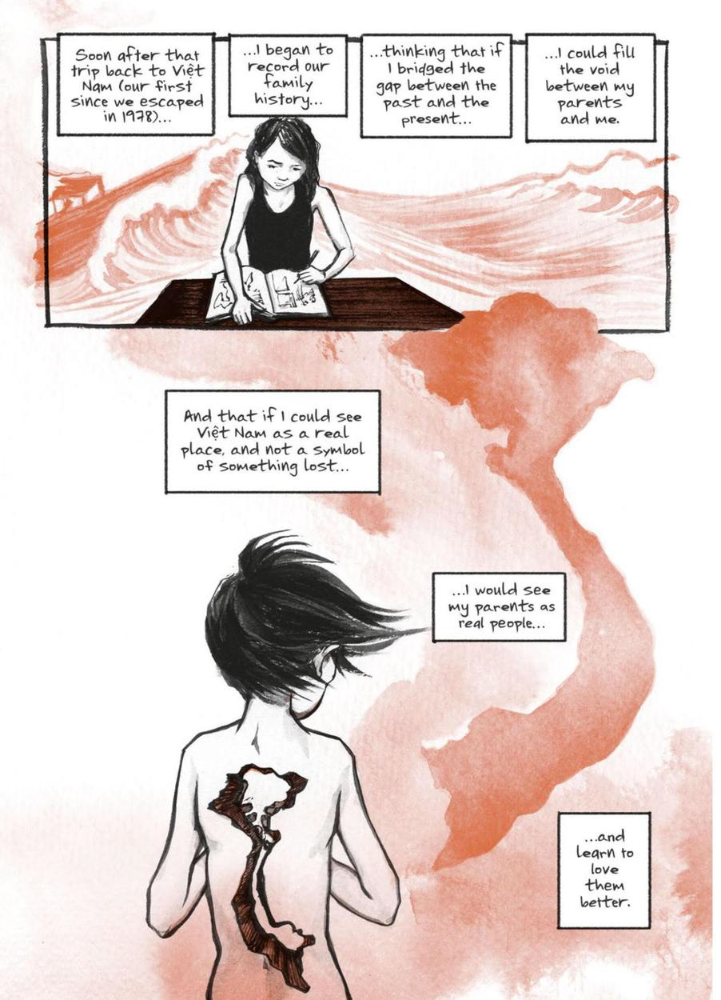
Page 38: Thi explains that she began this journey into the past in order to help bridge the gap between her parents. The second panel shows a picture of a young girl (Bui) from behind with a piece of her body missing that is in the shape of Vietnam.
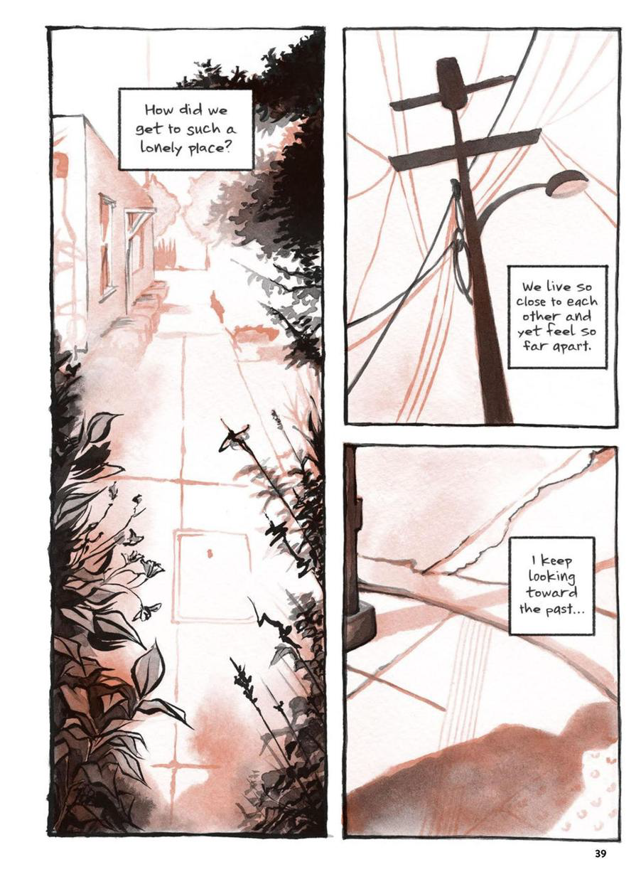
Page 39: Bui laments that she is lonely. Her family lives close to each other geographically, but there is an emotional distance between them that she seeks to bridge by turning to the past. The panels show the shadow of a single person cast upon an otherwise empty street.
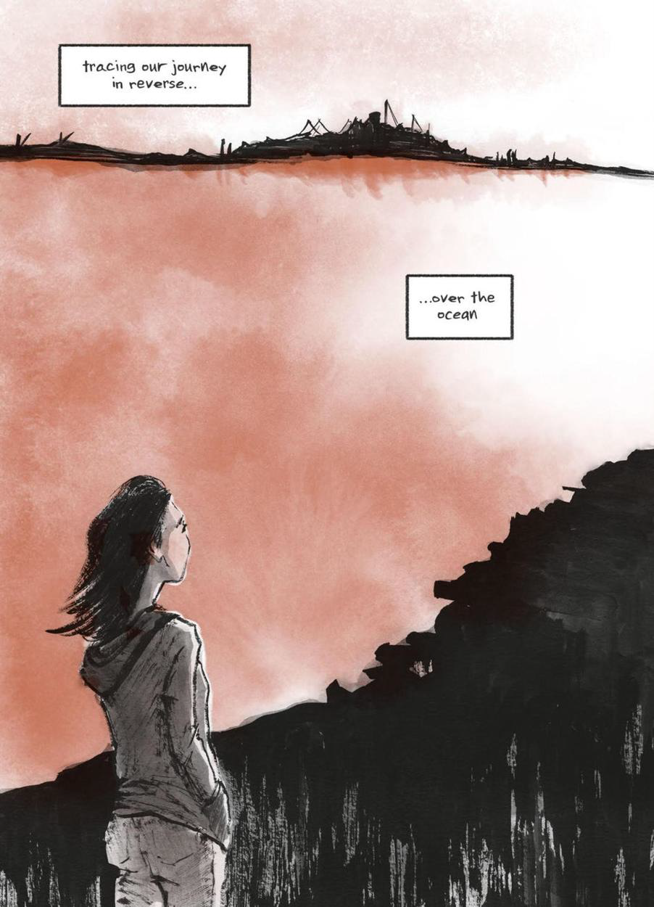 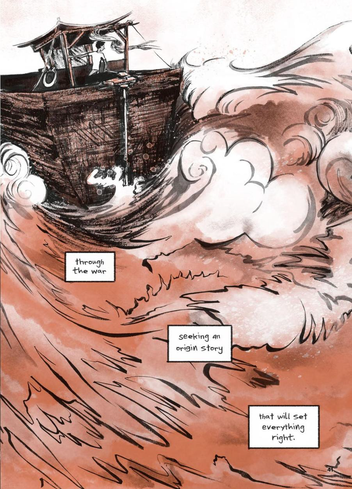
Pages 40-41 are splash pages that show Bui looking across a body of water (page 40) and a Vietnamese boat caught in a storm (page 41). She explains that she is tracing her family's journey in reverse and "seeking an origin story that will set everything right."
Because Thi is grappling with transgenerational trauma, the temporally fractured literary structure of her graphic memoir reflects the content quite appropriately. Often, symptoms and recollections of trauma erupt into our lives and stories unpredictably. We go off on tangents when telling stories to provide background information that is important for the audience to have in order to understand the events in question. People experience PTSD and flashbacks in response to environmental stimuli. We dwell on and obsess about the past, hoping to make sense of things that have happened to us.
Watch the following brief video (00:10:12, but I started it 00:01:06 minutes in), which discusses the impact of trauma on memory and storytelling:
As we learn in the video, there is a distinction to be made between painful memories and traumatic memories: one factor that distinguishes the two is the level of emotional intensity and fear that were experienced through recall over time. In painful memories, the emotional intensity of the response will lessen or soften; in traumatic memories, this is not (usually) the case. And, because the PTSD response strengthens the emotional response over time, trauma can lead to rumination and other symptoms on the Trauma Wheel:

Jonathan Wick's Trauma Wheel, depicting different symptoms/areas impacted by trauma: avoidance, hyperarousal, startle response, sleep disturbances, memory & concentration, and intrusive thoughts. Image Source
As we see on page 39 of our text, Thi keeps "looking toward the past [...] seeking an origin story that will set everything right." The past is a place of trauma for Thi, but also one of reconciliation that is important if she is to work through said trauma. In fact, the very title of the book reflects a painful transgenerational traumatic experience: the death of Bui's eldest sister as an infant:
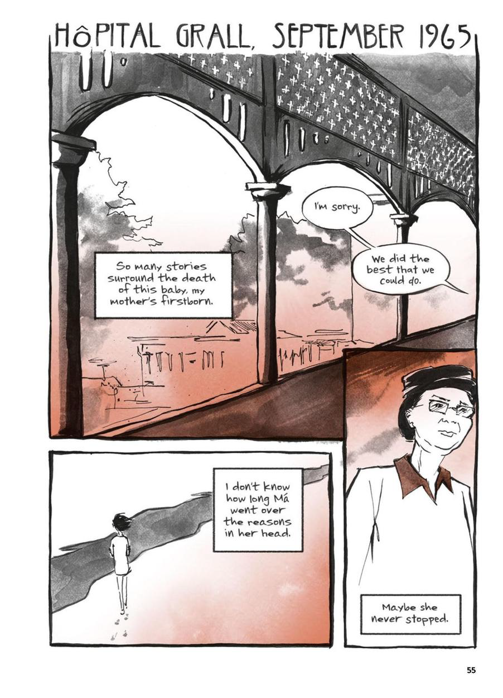
Page 55: Panel 1 shows us Bui's mother in the past when the doctors told her that her baby had died. Panel 2 shows her mother afterwards, alone and isolated on a beach. Panel three shows an older version of her mother and in the caption, Bui wonders if her mother never stopped going over the reasons that the baby died.
While much of this graphic memoir involves Bui processing her own trauma, she also has to deal with the transgenerational trauma through secondary trauma, also known as secondary traumatic stress:
Secondary traumatic stress is the emotional duress that results when an individual hears about the firsthand trauma experiences of another [...] For therapists, child welfare workers, case managers, and other helping professionals involved in the care of traumatized children and their families, the essential act of listening to trauma stories may take an emotional toll that compromises professional functioning and diminishes quality of life. Individual and supervisory awareness of the effects of this indirect trauma exposure is a basic part of protecting the health of the worker and ensuring that children consistently receive the best possible care from those who are committed to helping them. (NCTSN, para. 1, emphasis added)
As a coping mechanism, Thi and her family seem to embrace the motto that also serves as the title for the memoir: they did "the best that we could do." From Thi doing her best to deliver her own son via natural means--to her parents doing their best to survive war, immigration, childbirth, parenthood, racism, and other horrific circumstances--Bui's family has persisted and persevered, despite some pretty terrible odds.
Articulating Trauma
The relationship between trauma and storytelling is inherently fraught with complexities and contradictions. The inability to articulate or narrativize a story in a way that feels socially appropriate and historically accurate is another symptom of trauma. By necessity, certain elements and parts of a person's "truth" are lost as we attempt to convey experience through language. As Cathy Caruth (1996) notes:
[...] trauma seems to be much more than a pathology, or the simple illness of a wounded psyche: it is always the story of a wound that cries out, that addresses us in the attempt to tell us of a reality or truth that is not otherwise available. This truth, in its delayed appearance and its belated address, cannot be linked only to what is known, but also to what remains unknown in our very actions and our language. (4)
So, what does Caruth mean in this passage? How can trauma remain linked to what is both "known" and "unknown" in our actions and language? Here's another way to think about what Caruth is getting at..
6.png) |
Pain and Language?Here's a simple activity to help illustrate Caruth's point about the troubled relationship between pain and language:
|
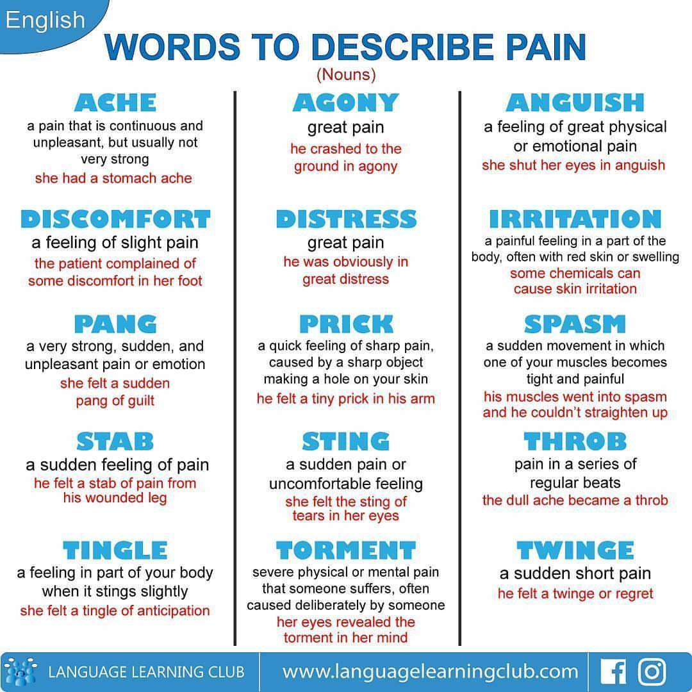
A chart depicting some of the different adjectives used in English to describe pain: ache, agony, anguish, discomfort, distress, irritation, pang, prick, spasm, stab, sting, throb, tingle, torment, twinge. Image Source
And sometimes, we try to combine visuals and metrics with language in an attempt to convey our experience and generated shared understanding. Consider the Pain Scale below:

A Pain Scale that goes from 0 (no pain) to 10 (unable to move). Image Source
Have you ever felt a "10" on this pain scale? How do you know? How can you determine if your experience of pain at an "8" isn't what someone else might call a "10"? Such distinctions are the difference between subjective experiences and objective experiences, or subjectivity and objectivity.
Emotions, too, are subjective experiences (based upon individual context), though some academics argue that there are universal emotions that we can expect most people to feel in certain situations or circumstances. Below is an Emotions Wheel that helps provide vocabulary for primary, secondary, and tertiary emotions:

An Emotions Wheel, designed to provide people with vocabulary to describe primary, secondary, and tertiary emotions. Image Source
Tools like Emotions Wheels provide people with a method to both classify and articulate the subjective experience of emotions. So, let's extrapolate off of this idea a bit and apply it to graphic memoirs and life writing. Often we use commonly understood vocabulary (or parts of speech, such as nouns, adjectives, and sometimes adverbs) to describe or label sensations/feelings so as to convey or relate our experiences to other people.
But there is another means that we have to convey complex subjective experiences through language: the use of common similes and metaphors to connect two similar subjective experiences and demonstrate how one is like or akin to the other. An example that always helped me to understand this comes from Twilight (2008). When Edward Cullen is trying to explain a vampire's "thirst" to Bella Swan (a mortal), he does so like this:
There are few points worthy of note here (beyond the horrible acting--don't come at me! 😂):
- Edward describes his physical and mental anguish (his subjective experience) in terms of a drug addiction
- Presumably, Bella does not have lived experience with drugs (she's a pretty straight-laced, loner type of character)
- Members of the audience may or may not have lived experience with drugs
The question that follows, then, must be: how can we all seem to understand (and even empathize) with this experience through the use of language, even if we have never encountered it first hand? In other words: how are we able to understand the subjective experience that Edward is trying to convey? Through his use of simile, we can still get a sense of what Edward means when he calls Bella's scent his own "personal brand of heroin," even without lived experience: Edward has an all-consuming addiction to Bella. There is a level of desperation and obsession expressed in this scene that relies upon the universal experiences of emotions and feelings such as covetousness and empathy.
"But wait, Julie--didn't you just say that emotions are subjective? How then do scholars account for universal experiences of emotions? And for that matter, how does a concept like empathy work?"
Why, that's an excellent question, very smart student! Way to pay attention! Watch the following video explanation (00:07:28) of how emotions can transcend cultures and language structures:
But even if we accept that some emotions are universal experiences, the ability to translate those emotions into language (to make them comprehensible) in not universal. Complications, and indeed, failures in relaying emotions--including traumatic experiences--are the result of both the power of (and challenges with) language as a social construct.
To return to the Preface of Bui's work for a moment, the limitations of language in Bui's early attempts to convey her family's story was an obstacle through which she had to work. She describes her homemade book during graduate studies as "clumsy," or the best she could do at the time. Part of the struggle was to work through the "storytelling problem of how to present history in a way that is human and relatable and not oversimplified." In the end, Bui turns to the graphic memoir as a genre to help convey her experience through language and images. By using both as part of the narrative structure, Bui is not as constrained by the limitations of language as she attempts to convey her experience and meaning; instead, the combination of words and pictures engages the reader in the art of active textual interpretation and analysis, rather than allowing the reader to passively consume the text without engaging with it.
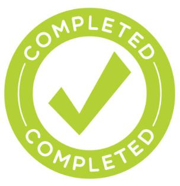
This completes the Week 4 Content Module. Thank you for participating!